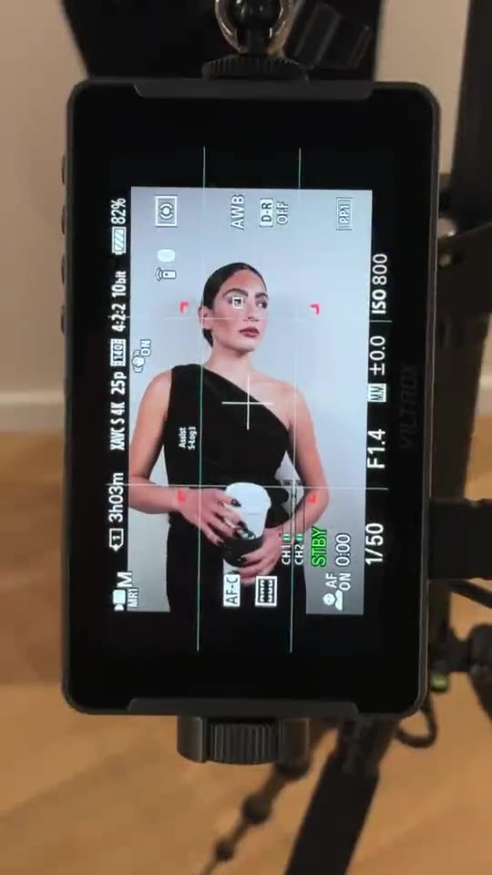
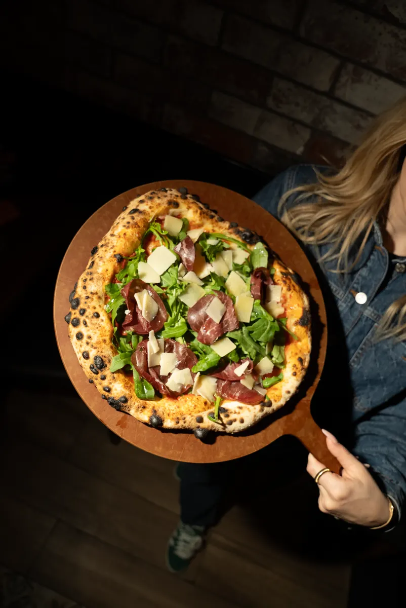
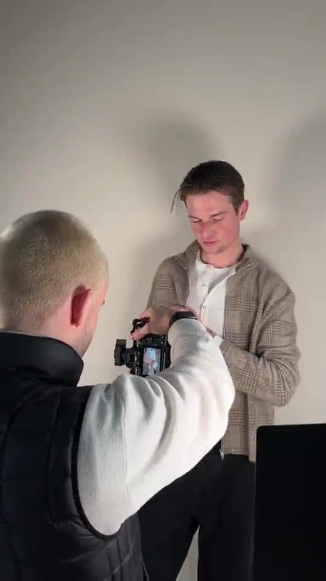
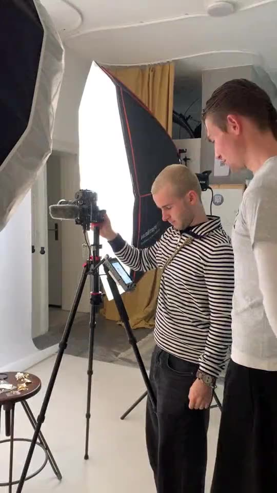
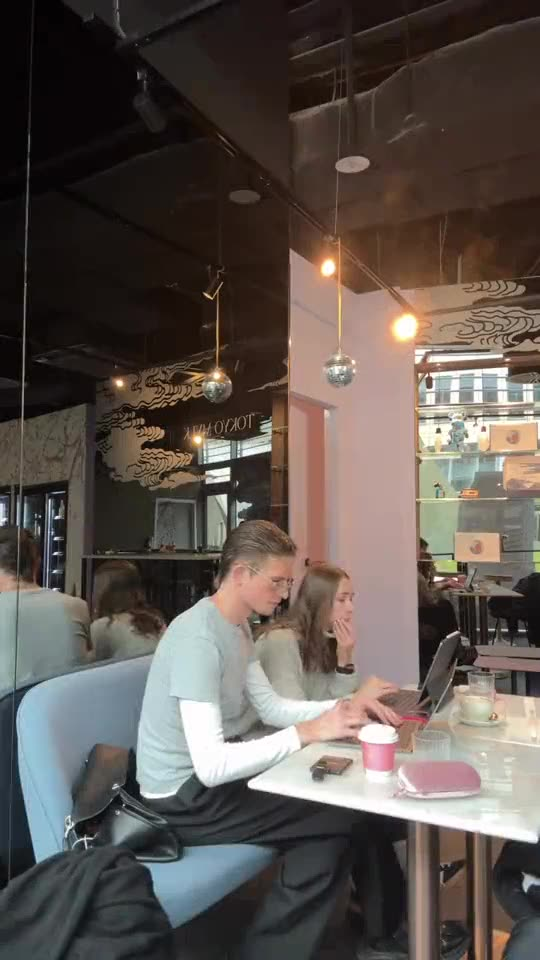

E-Book für Unternehmer:innen
Der Wandel – und was du jetzt tun musst, um auf Social Media mehr Umsatz, zufriedenere Kund:innen und mehr Bewerbungen zu gewinnen.
Vorwort
Social Media wird 2027 kein Kanal mehr sein, auf dem man „auch präsent“ ist. Es wird der Ort, an dem Kund:innen dich finden, prüfen, buchen und weiterempfehlen. Und der Ort, an dem Bewerber:innen entscheiden, ob sie für dich arbeiten wollen.
Wir sind GRID, Social-Media-Agentur aus Berlin und Frankfurt. Wir betreuen über 30 Marken, von Frittenwerk über Goldies bis yousthetics. Was in diesem E-Book steht, kommt nicht aus Trendreports, sondern aus dem, was wir jeden Tag in Feeds, Insights und DMs sehen. Dieses E-Book ist für Unternehmer:innen, die Social Media nicht als Pflichtprogramm sehen, sondern als Wachstumskanal.
aus Social Media, messbar statt gefühlt.
die bleiben und dich weiterempfehlen.
ohne teure Stellenportale.
Die Prognosen zu 2027 sind unsere Einschätzung auf Basis aktueller Entwicklungen. Die Zahlen aus unseren Cases sind echt und stammen aus der Meta Business Suite unserer Kund:innen.
Kapitel 1
Reichweite wird billig, Vertrauen wird teuer. Wer 2027 gewinnt, hat nicht den lautesten Feed, sondern den glaubwürdigsten.
Kapitel 1 · Der Wandel
Austauschbarer Content wird zur Massenware und verliert jeden Wert. Echte Menschen, Orte und Geschichten werden zum Unterscheidungsmerkmal. Ein Content Day in deinem Laden schlägt jedes generierte Stockvideo.
Gerade jüngere Zielgruppen suchen auf TikTok und Instagram nach Restaurants, Behandlungen oder Arbeitgebern. Dein Profil ist deine neue Startseite: Captions, On-Screen-Text und Highlights müssen gefunden werden.
Jedes Reel wird einzeln getestet und an Fremde ausgespielt. Follower-Zahlen verlieren an Bedeutung. Die Chance für kleine Marken: Entscheidend sind die ersten 1,5 Sekunden.
Die Interaktion wandert in DMs, Kommentare, Broadcast-Kanäle und Gruppen. Marken, die antworten, werden empfohlen. Marken, die nur senden, werden überscrollt.
Menschen vertrauen Menschen. Lokale Creator:innen mit 10.000 echten Fans bringen oft mehr Gäste als eine Kampagne mit Millionen Impressionen.
Bewerber:innen scrollen durch dein Profil, bevor sie sich bewerben. Ein Feed ohne Team, Einblicke und Haltung kostet Bewerbungen, die du nie zu sehen bekommst.
Kapitel 1 · Der Wandel
Aufrufe
mit unserem ersten Reel für lovebirds. Kein großer Account nötig – nur der richtige Hook.
mehr Reichweite
für The Dawn durch gezielte Kooperationen mit Food-Creator:innen.
Aufrufe
für Frittenwerk mit Reels, Creator-Kooperationen und TikTok.
Quelle: Meta Business Suite der jeweiligen Accounts.

Kapitel 2
Umsatz entsteht, wenn drei Dinge zusammenspielen: Inhalte, die stoppen. Ein Profil, das überzeugt. Und ein Weg zur Buchung, der keine Sekunde zu lang ist.
Kapitel 2 · Umsatz
Jede Stufe verliert Menschen. Deine Aufgabe ist, an jeder Stufe weniger zu verlieren als die Konkurrenz.
Reels mit starkem Hook in den ersten 1,5 Sekunden erreichen Menschen, die dich noch nicht kennen.
Wer interessiert ist, landet auf deinem Profil. Bei lovebirds waren das 540.000 neue Profilaufrufe.
Highlights, Bewertungen und ein klares Grid beantworten die Frage „Lohnt sich das?“.
Ein Klick führt direkt zu Reservierung, Shop, Termin oder Anfrage.
Stories und Community-Pflege holen Kund:innen zurück und machen sie zu Stammkund:innen.
neue Profilaufrufe
für lovebirds nach 3 Monaten Zusammenarbeit.
mehr Instagram-Reichweite
für lovebirds im selben Zeitraum.
Quelle: Meta Business Suite @lovebirds.berlin, Ergebnisse nach 3 Monaten Zusammenarbeit.
Kapitel 2 · Umsatz
Zeig das Produkt im Moment des Genusses oder Ergebnisses: das knusprige Close-up, das Vorher-Nachher, die volle Bar am Freitag.
Bio mit klarem Angebot und Ort, Link direkt zur Buchung, Highlights für Angebot, Preise, Bewertungen und Anfahrt.
Reels, die organisch gut laufen, werden zu Meta Ads. So zahlst du nur für Creatives, die bewiesen funktionieren.
Lokale Creator:innen bringen deine Marke in neue Feeds. Frittenwerk erreicht mit Kooperationen und TikTok über 125.000 Follower.
Wer dich auf Social entdeckt, prüft danach oft dein Google-Profil. Aktuelle Bilder, Beiträge und beantwortete Bewertungen schließen die Lücke zur Buchung.
Tracke Link-Klicks, Reservierungen, Anfragen und Kosten pro Conversion. Nur so weißt du, welcher Content verkauft.
Realistische Erwartung: Social Media ist kein Schalter, sondern ein System. Spürbar wird es meist ab dem dritten Monat. Im Schnitt steigern wir die Instagram-Reichweite unserer Kund:innen um 875 %.
Kapitel 3
Kund:innen erwarten, dass sie dich dort erreichen, wo sie ohnehin sind. Wer schnell und persönlich antwortet, gewinnt Stammkund:innen. Wer schweigt, verliert sie leise.
Kapitel 3 · Kundenzufriedenheit
Jede beantwortete Frage, jede Reaktion auf eine Story und jede gute Antwort auf Kritik sieht jeder. Sie wirkt auf deine Kund:innen – und auf alle, die es noch werden.
Kommentare und DMs werden täglich beantwortet, nicht „wenn Zeit ist“. Leg fest, wer zuständig ist und in welcher Zeit geantwortet wird.
Deine Marke klingt in jeder Antwort gleich, egal wer schreibt. Das schafft Wiedererkennung und Vertrauen.
Auf jede Google-Bewertung antworten, auch auf die guten. Kritik sachlich und lösungsorientiert beantworten.
User-Generated Content teilen, per Umfrage nach Wunschprodukten fragen, zeigen, was du aus Feedback gemacht hast.
Story-Highlights zu Öffnungszeiten, Preisen, Ablauf oder Anfahrt sparen dir Nachrichten und deinen Kund:innen Zeit.
Behind-the-Scenes, Team und Handwerk zeigen. Bei yousthetics ist so Vertrauen entstanden, lange bevor jemand die Praxis betreten hat.
Kapitel 3 · Der Beweis
Goldies, Kreuzberger Smashburger-Kult, kam mit einem Account weit unter seinem Potenzial zu uns. Mit Content-Plan, Kooperationen in der Gastro-Szene und Community-Events auf YouTube ist daraus eine echte Fanbase geworden.
Follower beim Start
Follower heute
Das Team von GRID ist verantwortlich für unsere Social Media Kanäle von The Dawn. Das Team rund um Giulia hat mich mit seiner persönlichen Art und Nähe zum Kunden überzeugt. Ich bin allzeit zufrieden.
Omar Alayoub · Geschäftsführer, The Dawn
mehr Instagram-Reichweite
für yousthetics nach 9 Monaten.
neue Follower
für The Dawn durch Community Management und Kooperationen.
Quelle: Meta Business Suite @goldies_smashburger, @yousthetics, @thedawn.berlin.

Kapitel 4
Gute Leute suchen nicht mehr auf Stellenportalen, sie scrollen. Wer als Arbeitgeber im Feed sichtbar ist und es leicht macht, sich zu bewerben, bekommt die Bewerbungen, die anderen fehlen.
Kapitel 4 · Bewerbungen
Bewerber:innen müssen sehen, wie es bei dir ist, bevor sie sich bewerben.
In zwei Minuten bewerben, am Handy, ohne Anschreiben. Erst beides zusammen ergibt einen Bewerbungsstrom.
Mitarbeitende stellen sich vor, zeigen ihren Alltag, erzählen, warum sie geblieben sind.
„Flache Hierarchien“ glaubt niemand, ein Video vom Team-Event schon. Zeig Schichtbeginn, Teamessen, Aufstiegsgeschichten.
Meta Ads mit Team-Videos erreichen passende Menschen in deiner Region, auch wenn sie gerade nicht aktiv suchen.
Kurzes Formular, Upload vom Handy. QR-Codes in Filiale oder Laden führen direkt zur Speed-Bewerbung.
E-Mail, Social-Funnel und QR-Code laufen zentral zusammen, jede Bewerbung bekommt sofort eine Rückmeldung.
Gute Kandidat:innen sind nach wenigen Tagen woanders. Wer innerhalb von 48 Stunden reagiert, gewinnt.
Kapitel 4 · Der Beweis
Für die Frankfurter Traditionsbäckerei Huck haben wir ein Recruiting-System aufgebaut. Statt drei Zeilen aus einer Direktnachricht liegt am Ende eine vollständige Bewerbungsakte vor.


Kapitel 5
In 90 Tagen von „wir posten mal was“ zu einem System, das Umsatz, Zufriedenheit und Bewerbungen messbar steigert. Druck dir die nächsten Seiten aus und hake ab.
Kapitel 5 · Fahrplan
Kapitel 5 · Fahrplan
| Ziel | Kennzahl | Wo du sie findest |
|---|---|---|
| Umsatz | Link-Klicks, Reservierungen, Anfragen, Kosten pro Conversion | Meta Business Suite, Werbeanzeigenmanager, Buchungstool |
| Sichtbarkeit | Reichweite, Profilaufrufe, neue Follower | Meta Business Suite |
| Zufriedenheit | Antwortzeit auf DMs, Bewertungsschnitt, wiederkehrende Kund:innen | Postfach, Google-Unternehmensprofil, Kassensystem |
| Bewerbungen | Bewerbungen pro Monat, Kosten pro Bewerbung, Zeit bis zur Rückmeldung | Bewerbungs-Dashboard, Werbeanzeigenmanager |
Tipp: Trag dir den Tag 90 jetzt in den Kalender ein. Vergleiche dann jede Kennzahl mit heute. Was du nicht misst, kannst du nicht steigern.
Dein nächster Schritt
2027 beginnt nicht im Januar, sondern mit der Entscheidung, die du heute triffst. In einer kostenlosen Erstberatung schauen wir uns deine Kanäle an und zeigen dir, wo dein größtes Potenzial liegt.
Erstberatung online anfragen und ein paar kurze Fragen beantworten.
Giulia prüft mit dir, wie wir dir am besten helfen können.
Mit gutem Gefühl starten wir zum nächsten Monat mit Setup und Strategie.
Social Media Marketing aus Berlin und Frankfurt
Giulia Cavallino · Gründerin